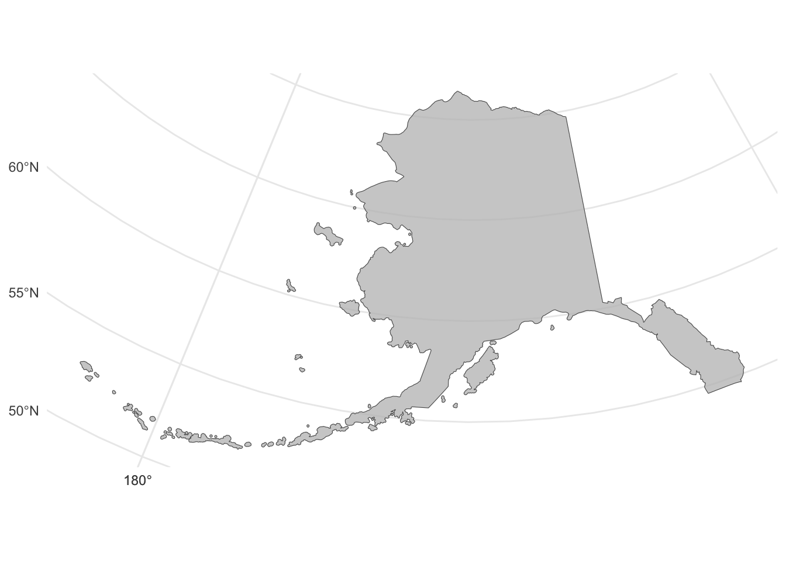
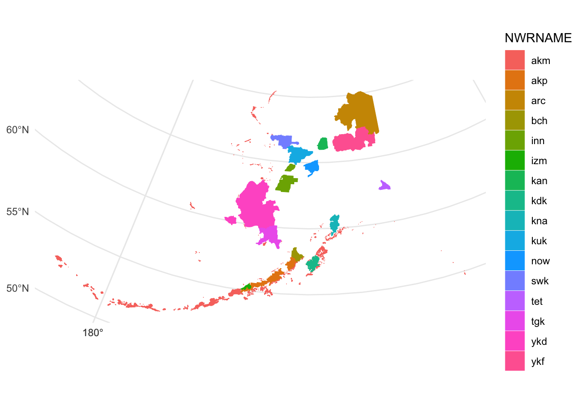
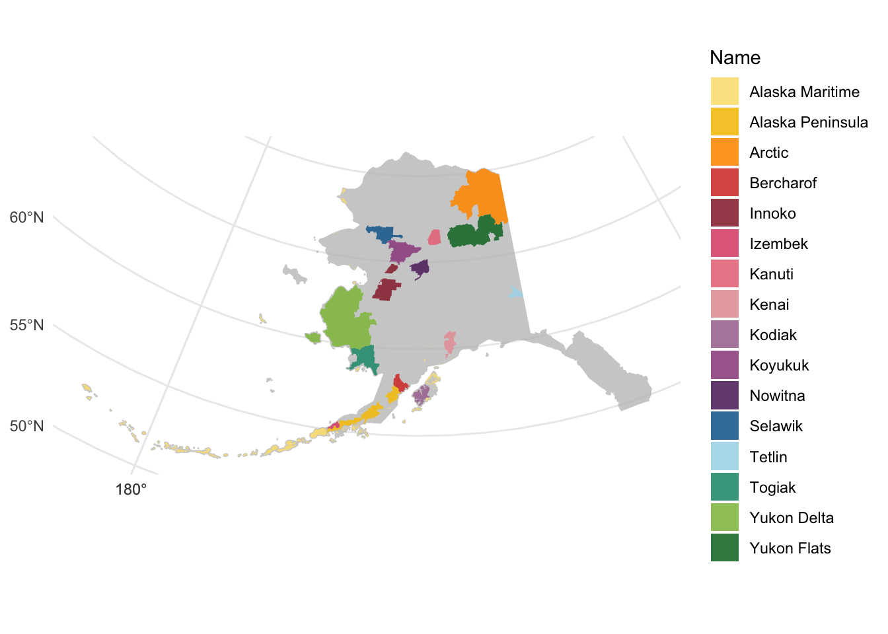
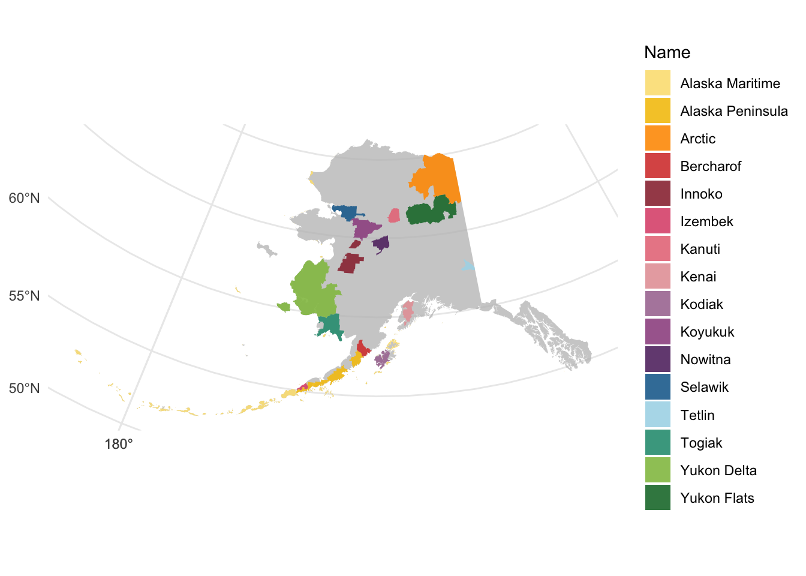

library(tidyverse)
library(terra)
library(tidyterra)
library(kableExtra)We’re starting a new project to map carbon vulnerability and help land managers make decisions about carbon management in National Wildlife Refuges in Alaska.
While Alaska is home to just 16 of the 570 refuges spread across the United States, according to the Friends of Alaskan Wildlife Refuge System, those 16 make up nearly 85% of the refuge system’s 95 million acres, clocking in at a cool 80 million acres of land.
But, Alaska is big. How much of the 80 million acres is NWR?
I’m loading a shapefile of the boundary of Alaska, originally sourced from a USGS dataset and reprojected to Alaska Albers in QGIS.
alaska = vect("/Users/katherinehayes/Google Drive/Work/Website/krhayes.com/posts/Post_MappingRefuges/data/AK_boundary.shp")
crs(alaska)[1] "PROJCRS[\"NAD83 / Alaska Albers\",\n BASEGEOGCRS[\"NAD83\",\n DATUM[\"North American Datum 1983\",\n ELLIPSOID[\"GRS 1980\",6378137,298.257222101,\n LENGTHUNIT[\"metre\",1]]],\n PRIMEM[\"Greenwich\",0,\n ANGLEUNIT[\"degree\",0.0174532925199433]],\n ID[\"EPSG\",4269]],\n CONVERSION[\"Alaska Albers (meters)\",\n METHOD[\"Albers Equal Area\",\n ID[\"EPSG\",9822]],\n PARAMETER[\"Latitude of false origin\",50,\n ANGLEUNIT[\"degree\",0.0174532925199433],\n ID[\"EPSG\",8821]],\n PARAMETER[\"Longitude of false origin\",-154,\n ANGLEUNIT[\"degree\",0.0174532925199433],\n ID[\"EPSG\",8822]],\n PARAMETER[\"Latitude of 1st standard parallel\",55,\n ANGLEUNIT[\"degree\",0.0174532925199433],\n ID[\"EPSG\",8823]],\n PARAMETER[\"Latitude of 2nd standard parallel\",65,\n ANGLEUNIT[\"degree\",0.0174532925199433],\n ID[\"EPSG\",8824]],\n PARAMETER[\"Easting at false origin\",0,\n LENGTHUNIT[\"metre\",1],\n ID[\"EPSG\",8826]],\n PARAMETER[\"Northing at false origin\",0,\n LENGTHUNIT[\"metre\",1],\n ID[\"EPSG\",8827]]],\n CS[Cartesian,2],\n AXIS[\"easting (X)\",east,\n ORDER[1],\n LENGTHUNIT[\"metre\",1]],\n AXIS[\"northing (Y)\",north,\n ORDER[2],\n LENGTHUNIT[\"metre\",1]],\n USAGE[\n SCOPE[\"Topographic mapping (small scale).\"],\n AREA[\"United States (USA) - Alaska.\"],\n BBOX[51.3,172.42,71.4,-129.99]],\n ID[\"EPSG\",3338]]"ggplot() +
geom_spatvector(data = alaska) +
theme_minimal()
But, I don’t need all of the jurisdictional distinctions. I can use the aggregate() function in terra to lose the detail.
alaska = terra::aggregate(alaska, by = "state_name")
ggplot() +
geom_spatvector(data = alaska, fill = "grey", alpha = 0.75)+
theme_minimal()
So minimal! So elegant!
Now I can bring in the National Wildlife Refuge shapefile:
refuge = vect("/Users/katherinehayes/Google Drive/Work/Website/krhayes.com/posts/Post_MappingRefuges/data/Boundaries_Refuge.shp")
crs(refuge) = crs(alaska) # check that it has the same projection
ggplot() +
geom_spatvector(data = refuge,
aes(fill = NWRNAME, color = NWRNAME)) +
theme_minimal()
What’s hard to tell from the plot above, is that the refuge spatial vector is made up of a ton of polygons.
terra::nrow(refuge)[1] 5445Similar to the state shapefile, I can aggregate so each refuge is represented by a single polygon:
refuge <- terra::aggregate(refuge, by = "NWRNAME")
terra::nrow(refuge)[1] 16ggplot() +
geom_spatvector(data = refuge,
aes(fill = NWRNAME, color = NWRNAME)) +
theme_minimal()(The difference is again, mostly internal, but 5445 polygons down to 16 makes the object a bit easier to handle).
I also want to use the full names for refuges, not the acronyms. Here’s an ifelse chain to rename them.
refuge = refuge %>%
mutate(Name = ifelse(NWRNAME == "akm", "Alaska Maritime",
ifelse(NWRNAME == "akp", "Alaska Peninsula",
ifelse(NWRNAME == "arc", "Arctic",
ifelse(NWRNAME == "bch", "Bercharof",
ifelse(NWRNAME == "inn", "Innoko",
ifelse(NWRNAME == "izm", "Izembek",
ifelse(NWRNAME == "kan", "Kanuti",
ifelse(NWRNAME == "kdk", "Kodiak",
ifelse(NWRNAME == "kna", "Kenai",
ifelse(NWRNAME == "kuk", "Koyukuk",
ifelse(NWRNAME == "now", "Nowitna",
ifelse(NWRNAME == "swk", "Selawik",
ifelse(NWRNAME == "tet", "Tetlin",
ifelse(NWRNAME == "tgk", "Togiak",
ifelse(NWRNAME == "ykd", "Yukon Delta","Yukon Flats"))))))))))))))))Now I can go ahead and plot the NWR against the AK boundary:
ggplot() +
geom_spatvector(data = alaska, fill = "grey", alpha = 0.75, color = NA)+
theme_minimal() +
geom_spatvector(data = refuge, aes(fill = Name),
color = NA, alpha = 0.9) +
scale_fill_manual(
values = c("#fbe183", "#f4c40f", "#fe9b00", "#d8443c", "#9b3441",
"#de597c", "#e87b89", "#e6a2a6", "#aa7aa1", "#9f5691",
"#633372", "#1f6e9c", "#abd9e9", "#2b9b81", "#92c051", "#1b7837")) 
A few things: one, the map of Alaska isn’t terribly high-resolution - note the difference in coastline between the Alaska shapefile and the Alaska Peninsula NWR. I found a higher-resolution shapefile from the Alaska Department of Natural Resources, linked here. Let’s see if it makes a difference:
alaska_hires = vect("/Users/katherinehayes/Google Drive/Work/Website/krhayes.com/posts/Post_MappingRefuges/data/AK_hires.shp")
crs(alaska_hires) = crs(refuge)ggplot() +
geom_spatvector(data = alaska_hires, fill = "grey", alpha = 0.75, color = NA)+
theme_minimal() +
geom_spatvector(data = refuge, aes(fill = Name),
color = NA, alpha = 0.9) +
scale_fill_manual(
values = c("#fbe183", "#f4c40f", "#fe9b00", "#d8443c", "#9b3441",
"#de597c", "#e87b89", "#e6a2a6", "#aa7aa1", "#9f5691",
"#633372", "#1f6e9c", "#abd9e9", "#2b9b81", "#92c051", "#1b7837")) 
Much better!!
Now, we can use the expanse() function in terra to calculate the area covered by polygons. I’ll start by testing it with the refuge shapefile. Here’s the raw output:
round(expanse(refuge, unit = "ha", transform = FALSE) * 2.471) [1] 5759488 4918089 19848447 1457981 4566151 417387 1636779 1721743
[9] 1985975 4498293 2056418 3220065 931457 4712266 24071626 11176296(nice that it calculates for each NWR) - and here’s a pretty table:
nwr_names = c("Alaska Maritime", "Alaska Peninsula","Arctic",
"Bercharof", "Innoko","Izembek","Kanuti","Kodiak",
"Kenai","Koyukuk","Nowitna","Selawik","Tetlin","Togiak",
"Yukon Delta","Yukon Flats")
refuge_acre = data.frame(NWR = nwr_names,
acres = round(expanse(refuge,
unit = "ha", transform = FALSE) *
2.471))
kable(refuge_acre)| NWR | acres |
|---|---|
| Alaska Maritime | 5759488 |
| Alaska Peninsula | 4918089 |
| Arctic | 19848447 |
| Bercharof | 1457981 |
| Innoko | 4566151 |
| Izembek | 417387 |
| Kanuti | 1636779 |
| Kodiak | 1721743 |
| Kenai | 1985975 |
| Koyukuk | 4498293 |
| Nowitna | 2056418 |
| Selawik | 3220065 |
| Tetlin | 931457 |
| Togiak | 4712266 |
| Yukon Delta | 24071626 |
| Yukon Flats | 11176296 |
Some of the numbers are a bit different than what I found online: the Yukon Flats Wikipedia puts it at 8.6 million acres, while the US Fish and Wildlife website says it’s 11.1 million acres. There’s similar discrepancies with the Togiak - wikipedia says 4.1 million acres, Fish and Wildlife doesn’t specify but other travel sites says the 4.7 million acre number the shapefile shows.
My best working guess is the distinction between NWR and Wildnerness - the NWR shapefile may include areas of Wildnerness.
So, what is that combined?
sum(round(expanse(refuge, unit = "ha", transform = FALSE)*2.471))[1] 9297846192 million acres - definitely larger than the website’s 80 million acre sum. Again, makes it seem like there’s wilderness areas within the shapefile.
Working with this file for now, how much of the State of Alaska is NWR?
sum(round(expanse(refuge, unit = "ha", transform = FALSE)*2.471)) /
sum(round(expanse(alaska_hires, unit = "ha", transform = FALSE)*2.471)) * 100[1] 24.92743So, 25%. Considering the size of the state, that’s a tremendous amount of landscape.